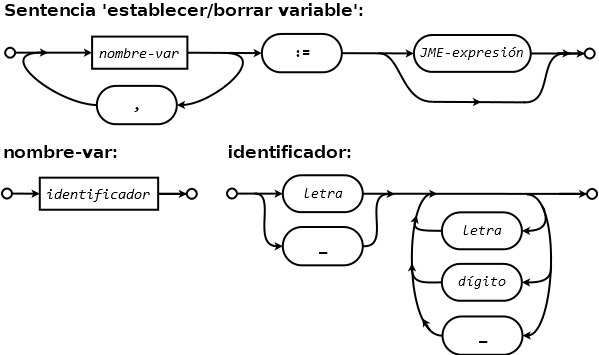
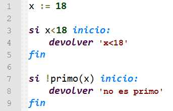
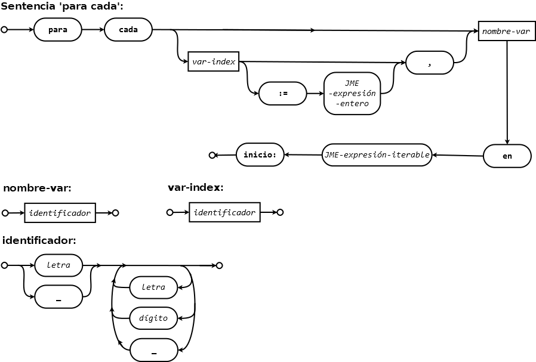
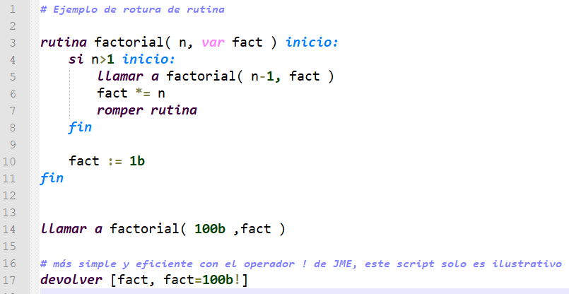
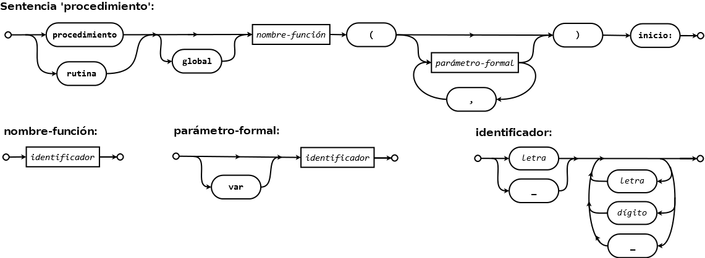
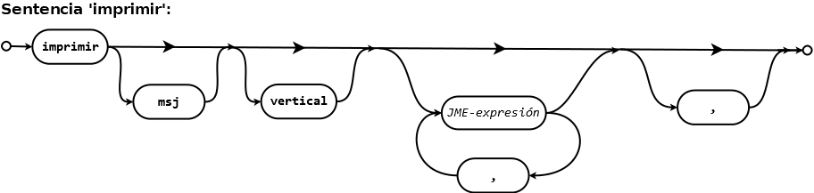
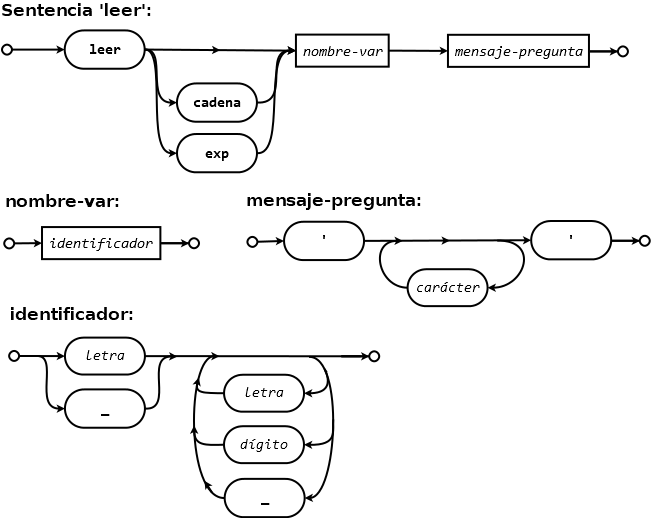

Las sentencias del lenguaje JMEScript se sitúan cada una en su propia línea del código fuente del script. Los espacios y tabulaciones iniciales y finales son ignorados, pudiéndose usar el sangrado que se desee.
JMEScript, es case-insensitive, por lo que las palabras reservadas del lenguaje (keywords), variables, rutinas, etc. pueden escribirse indistintamente en mayúsculas o minúsculas (el convenio usado en la documentación es minúsculas), siendo por tanto la variable nombre igual a NoMbRe.
Las sentencias que terminan en 'inicio:' son sentencias de bloque, que ejecutan o pueden ejecutar las líneas debajo de ellas hasta llegar a su sentencia fin correspondiente.
Las expresiones JME en las sentencias se pueden rodear en caso de confusión con dobles llaves; {{3x^2+1}}.
Establecer/Borrar variable
El operador := permite establecer el valor de una variable a una expresión JME o eliminar la variable si no se especifica ninguna expresión:
Diagrama sintáctico:


Salida en consola:
100 falso [11,10,2,3,12] <<<ScriptException>>> en la sentencia '[#8: imprimir x]': <<<EvaluarException>>>; identificador "x" no definido. --> ...
Establecer/Borrar múltiples variables
El operador :== permite establecer el valor de varias variables mediante un vector JME o eliminar las variables si no se especifica ningún vector. En número de variables debe ser menor o igual que el número de elementos del vector.
Diagrama sintáctico:


Salida en consola:
7 I 2 3 4 <<<ScriptException>>> en la sentencia '[#6: imprimir x, y, z]': <<<EvaluarException>>>; identificador "x" no definido. --> ...
Devolver resultado
La sentencia devolver termina el script y devuelve opcionalmente un resultado. Si no se especifica el resultado, el valor devuelto es null.
Si se usa esta sentencia dentro de una rutina, termina todo el script (ya que la rutina no es una función). Las rutinas se rompen con romper rutina.
Diagrama sintáctico:

Salida en REPL:
72 ==> Texto: 'valor no válido' (parse: 475µs(3%) / eval: 18,1ms(97%) / total: 18,6ms)
37 ==> RealDoble: 1370 (parse: 741µs(6%) / eval: 12,1ms(94%) / total: 12,9ms)
Selección 'Si'
La sentencia si selecciona el código de su bloque según una condición.
Diagrama sintáctico:

Valor devuelto:
'no es primo'
Selección 'Si no, si'
La sentencia si no, si selecciona el código de su bloque según una condición si las condiciones 'si' y 'si no, si' previas han fallado. Esta sentencia siempre debe seguir a un bloque 'si', u otro 'si no, si'.
Diagrama sintáctico:

Valor devuelto:
'notable'
Selección 'Si no'
La sentencia si no selecciona el código de su bloque si las condiciones 'si' y 'si no, si' previas han fallado. Esta sentencia siempre debe seguir a un bloque 'si' o 'si no, si'.
Diagrama sintáctico:

Ver ejemplo previo de la sentencia si no, si.
Bucle 'Mientras'
La sentencia mientras es un bucle pre-condición que repite un bloque de código mientras la condición es verdadera.
Diagrama sintáctico:

Este script añade tiradas de un dado hasta obtener un 6:

Valor devuelto:
[2,5,1,3,5,2,5,3,3,6]
Bucle 'Para'
La sentencia para es un bucle contador que repite un bloque de código en el rango especificado.
Pueden usarse números enteros o reales para especificar el rango, aunque los reales pueden acarrear
problemas de precisión.
Diagrama sintáctico:

Salida consola:
2 3 5 7 11 13 17 19 23

Salida consola:
0 0.1 0.2 0.30000000000000004 0.4 0.5 0.6 0.7 0.7999999999999999 0.8999999999999999 0.9999999999999999 1.0999999999999999 1.2 1.3 1.4000000000000001 0 0.1 0.2 0.3 0.4 0.5 0.6 0.7 0.8 0.9 1 1.1 1.2 1.3 1.4 1.5
Bucle 'Para cada'
La sentencia para cada es un bucle que itera sobre elementos JME iterables (elementos de vector, entradas de diccionario y caracteres de texto).
El bucle permite especificar, además de la variable de iteración que contiene cada elemento particular, una variable contadora. Si esta variable no está inicializada o está inicializada a un valor no entero, se inicializa a 0.
Diagrama sintáctico:

Salida en consola:
'leido un 4' 'leido un 2' 'leido un 7' 'leido un 1' 'leido un 9' 'leido un 0'

Salida en consola:
'caracter 1: 'H'' 'caracter 2: 'o'' 'caracter 3: 'l'' 'caracter 4: 'a'' 'caracter 5: ' '' 'caracter 6: 'M'' 'caracter 7: 'u'' 'caracter 8: 'n'' 'caracter 9: 'd'' 'caracter 10: 'o'' 'caracter 11: '!'' ==> VectorEvaluado: | 4 'a' | | 5 ' ' | | 6 'M' | | 7 'u' | | 8 'n' | | 9 'd' | | 10 'o' | | 11 '!' | (parse: 651µs(2%) / eval: 27,7ms(98%) / total: 28,4ms)

Salida en consola:
'usuario: 'viviana', contraseña: 'ridan'' 'usuario: 'user29', contraseña: 'masca3'' 'usuario: 'pepe', contraseña: 1234'

Salida en consola:
'odnum aloh' verdadero
Finalizador de bloque
La sentencia fin indica el final de un bloque, y debe ir en concordancia con el inicio de bloque que se desea cerrar. Una sentencia de bloque sin 'fin' o un 'fin' sin sentencia de bloque provocará un error.
Diagrama sintáctico:

Romper bucle o rutina
La sentencia romper finaliza incondicionalmente un bucle o una rutina.
Diagrama sintáctico:
Valor devuelto:
[2,2,5,1,2,2,2,4,2,4,2,5,4,4,6]

Valor devuelto:
[93326215443944152681699238856266700490715968264381621468592963895217599993229915608941463976156518286253697920827223758251185210916864000000000000000000000000,verdadero]
Continuar
La sentencia continuar salta a la siguiente iteración del bucle.
Diagrama sintáctico:

Valor devuelto:
'El cielo est entrbicudriquindo'
Asignación binaria implícita
Esta sentencia permite autoasignar implícitamente el resultado de una operación binaria en la que el valor de la variable es el primer operando.
Es una forma corta del operador de asignación := cuando la expresión es una operación binaria, por tanto a<operador>=<expresión> es equivalente a a:=a<operador><expresión>
Diagrama sintáctico:


Valor devuelto:
314.1
Asignación unaria implícita
Esta sentencia permite autoasignar implícitamente el resultado de una operación unaria en la que el valor de la variable es el operando.
Es una forma corta del operador de asignación := cuando la expresión es una operación unaria, por tanto a<operador> es equivalente a a:=a<operador>
Diagrama sintáctico:
Valor devuelto:
720
Limpiar variables
Esta sentencia actúa como el operador :== cuando elimina las variables del mapa de variables con la diferencia de que además sugiere al depurador de memoria de JAVA que libere la memoria reservada por la variable. Esto puede ser especialmente útil con variables que almacenen un valor extremadamente grande y que ya no sean necesarias en el resto de la ejecución del script. Además puede limpiar todas las variables del ámbito con el modificador *.
Diagrama sintáctico:

Salida en consola:
<<<ScriptException>>> en la sentencia '[#16: imprimir a, b, x, y]': <<<EvaluarException>>>; identificador "a" no definido. --> ...
Definir función JME de usuario
Esta sentencia establece una función JME definida por el usuario.
Las funciones definidas en el script permanecen en el mapa de funciones de JME al terminal el script, por lo que pueden usarse scripts como bibliotecas de funciones.
Diagrama sintáctico:

Salida en consola:
-11 [[[[[[[[[['Hola Mundo']]]]]]]]]] [[falso,falso,'valor:verdadero'],[falso,verdadero,'valor:verdadero'],[verdadero,falso,'valor:falso'],[verdadero,verdadero,'valor:falso']] [7,9] [0,1,2,3,4,5,6,7,8,9,30,31,32,33,34]
Definir operador JME de usuario
Esta sentencia establece un operador unario o binario JME definido por el usuario.
Los operadores definidos en el script permanecen en el mapa de operadores de JME al terminal el script, por lo que pueden usarse scripts como bibliotecas de operadores.
Diagrama sintáctico:
Salida en consola:
'edad: 38' [7,8,9,10] 999999999999999999990000000000000000000199999999999999999991
Crear rutina
Esta sentencia crea una rutina o procedimiento. Las rutinas JMEScript no devuelven un valor como las funciones, pero permiten la entrada y salida de datos mediante parámetros formales de entrada y entrada/salida (precedidos por var). Las rutinas pueden ejecutarse mediante la sentencia llamar a.
Las rutinas pueden definirse en cualquier punto del programa y ser llamadas en cualquier punto, no siendo necesario definirlas antes de llamarlas. En los ejemplos de esta página se sigue el convenio de definirlas al principio. También se pueden anidar (definir una dentro de otra) para indicar simbólicamente que una es auxiliar de otra, pero para el compilador es indiferente el lugar de declaración, son igualmente visibles en todo el script.
Los parámetros formales son variables solo definidas en el ámbito de la rutina. Toda variable definida dentro de la rutina es local a la rutina. Las variables del programa principal no son accesibles en la rutina.
- Los parámetros formales de entrada no incluyen el modificador var, y permiten la entrada de valores a la rutina.
- Los parámetros formales de E/S están precedidos por var y permiten introducir valores mediante una variable inicializada (opcionalmente) y devolver un valor a través de esa variable.
Una rutina termina al finalizar su bloque de código, o al usar la sentencia romper rutina, o al usar la sentencia devolver, pero esta última termina todo el script, no solo la rutina.
Nota: antes de definir una rutina JMEScript es preferible comprobar si existe alguna expresión JME que realice fácilmente la misma tarea. Por lo general será más simple y mucho más eficiente.
Diagrama sintáctico:


Salida en consola:
7 4
Valor devuelto:
[93326215443944152681699238856266700490715968264381621468592963895217599993229915608941463976156518286253697920827223758251185210916864000000000000000000000000,verdadero]
Llamar a rutina
La sentencia llamar a ejecuta una rutina JMEScript.
La cláusula llamar a es opcional, basta con el nombre de la rutina, pero clarifica para no confundir con funciones JME. Pueden verse ejemplos en la sentencia anterior de creación de rutina.
Diagrama sintáctico:

Imprimir en salida por defecto
Esta sentencia vuelca valores en el 'stream' especificado (por defecto System.out).
Si se usa sin ningún argumento imprime un salto de línea. Una coma al final evita el salto de línea al terminar.
Diagrama sintáctico:


Salida en consola:
2.718281828459045 0.36787944117144233 'abc' 12 1.0E100 falso
Lectura desde entrada por defecto
Esta sentencia lee una cadena en el 'stream' especificado (por defecto System.in).
La cadena leída se evaluará y asignará a la variable especificada. Si se añade el modificador cadena, la cadena se convertirá a texto sin evaluar, y no serán necesarias comillas. Si se añade el modificador exp, la cadena se convertirá en una expresión que se evaluará cada vez que se utilice la variable. Si hay un error en la expresión, la variable quedará indefinida (incluso si antes estaba definida). Se puede especificar un mensaje en la salida al pedir el dato.
Notas: para que esta sentencia funcione, la entrada por defecto del script debe permitir la introducción de datos por el usuario (mediante consola, diálogo, ...). El script estará detenido hasta la introducción del dato.
Diagrama sintáctico:

Salida en REPL:
x? 100 y? -30 x? 15^2-1 y? 10+20 x? 0 y? -10000 x? pi y? _e x? ==> VectorEvaluado: | 100 -30 | | 224 30 | | 0 -10000 | | 3.141592653589793 2.718281828459045 | (parse: 237ms(0%) / eval: 48,423s(100%) / total: 48,66s)
Evaluar expresión
Evalúa una expresión sin asignar resultado (v0.1.1).
Diagrama sintáctico:


Sentencia vacía
Sentencia vacía, es equivalente a una línea en blanco.
Diagrama sintáctico:
Variables en JMEScript
Las variables en JMEScript pueden almacenar cualquier tipo de terminal JME o estar indefinidas. Su valor se puede cambiar por el de cualquier otro tipo al ser un lenguaje débilmente tipado, o eliminarse y posteriormente asignar un nuevo valor. La función JME indefinido permite comprobar si la variable está definida o asignar un valor por defecto.
Las variables son accesibles en todo el script a partir del punto en que se definen (si son externas desde el principio) hasta el final del script, excepto dentro de las rutinas, a menos que se eliminen mediante los operadores := y :== o la sentencia limpiar.
Existen por lo tanto dos ámbitos en las variables de JMEScript, el del programa principal y el de las rutinas que tienen su propio diccionario de variables. Las variables definidas en bloques o sentencias siguen siendo visibles posteriormente.
Variables externas
Los scripts pueden recibir datos a través de variables definidas externamente, y que son visibles en el script. Esto convierte a un script JMEScript en una especie de función, capaz de recibir parámetros externos y devolver un resultado.
Las variables externas pueden definirse a través de JAVA si se está desarrolando una aplicación o a través de la función script, que permite ejecutar un script dentro de JME.
Ejemplo de llamada sin variables externas al script 'palindromo.jmes' y ejemplo pasándole variable externa 'text':

Salida en REPL:
>>> script(archivotxt('palindromo.jmes'),dic([])) ==> Texto: 'MEROL MUSPI ROLOD TIS TEMA RUTETCESNOC GNICSIPIDA TILE DES DOMSUIE ROPMET TNUDICNI TU EROBAL TE EROLOD ANGAM AUQILA TU MINE DA MINIM MAINEV SIUQ DURTSON NOITATICREXE OCMALLU SIROBAL ISIN TU DIUQILA XE AE IDOMMOC TAUQESNOC SIUQ ETUA ERUI TIREDNEHERPER NI ETATPULOV TILEV ESSE MULLIC EROLOD UE TAIGUF ALLUN RUTAIRAP RUETPECXE TNIS TACEACBO TATIDIPUC NON TNEDIORP TNUS NI APLUC IUQ AICIFFO TNURESED TILLOM MINA DI TSE MUROBAL' (parse: 543µs(4%) / eval: 14,3ms(96%) / total: 14,9ms)
Salida en REPL:
>>> script(archivotxt('palindromo.jmes'),dic('text','Hola Mundo')) ==> Texto: 'ALOH ODNUM' (parse: 2,8ms(16%) / eval: 14,3ms(84%) / total: 17,1ms)
Comentarios y líneas en blanco
Los comentarios en JMEScript son comentarios de una línea que comienzan con el carácter #. Pueden ir precedidos por espacios y al igual que las líneas en blanco, son ignorados por el proceso de compilación.
JMEScript para Desarrolladores
La clase jme.script.Script es la clase principal de los scripts JMEScript. Consta de dos constructores, uno para una cadena con el código fuente (con saltos de línea en cada instrucción), y otro con las líneas del código fuente como array de cadenas:
/**
* Compila script a partir de cadena de código fuente JMEScript
*
* @param script código fuente
* @throws ScriptException error al compilar script
*/
public Script( @NotNull String script ) throws ScriptException
/**
* Compila script a partir de líneas del código fuente JMEScript
*
* @param lineas array con las líneas del script
* @throws ScriptException error al compilar script
*/
public Script( @NotNull String[] lineas ) throws ScriptException
Los constructores de la clase Script compilan e inicializan el script (identifican las sentencias y parsean las expresiones JME).
El script puede ser ejecutado con los métodos Script#ejecutar, que ejecuta el script sin ninguna variable externa, y Script#ejecutar( @Nullable HashMap<String,Token> varMapIni ) que permite inicializar con un mapa de variables externas.
El script se puede ejecutar múltiples veces. Evitar compilar el mismo script más de una vez (por ejemplo en un bucle), ya que compilar puede ser un proceso lento, y solo es necesario una vez.
Si el script ha finalizado correctamente, puede obtenerse el resultado del script (si se ha especificado una instrucción devolver con parámetro), mediante los métodos:
- Script#getUltimoResultado (devuelve Terminal)
- Script#getUltimoResultadoNumero
- Script#getUltimoResultadoVector
- Script#getUltimoResultadoBooleano
- Script#getUltimoResultadoDiccionario
- Script#getUltimoResultadoTexto
El resultado es de tipo Terminal o también puede ser null si el script no devuelve nada, o usa devolver sin parámetro, o no ha terminado correctamente.
El script puede detenerse cuando está ejecutando en un hilo separado (que sería la forma correcta de hacerlo, véase la sección para ScriptThread), llamando al método Thread#interrupt() del hilo. Esto devolverá un ScriptException.
Puede comprobarse que un script ha terminado si se ejecuta en otro hilo comprobando que Script#isTerminado es verdadero o Script#isInterrumpido es verdadero.
Los métodos Script#getScript y Script#getLineas permiten leer el código fuente original del script (como cadena única o array de cadenas).
El método estático Script#cargarScriptDesdeArchivo( String filename ) permite cargar las líneas del script desde un archivo de texto, a partir de la ruta y nombre del archivo, que pueden pasarse al constructor.
Los métodos gettesr&setters Script#getEntrada, Script#setEntrada, Script#getSalida y Script#setSalida, permiten establecer los stream de entrada y salida por consola, por defecto System.in y System.out (puede asignarse null).
Ejemplo de ejecución del siguiente script en Java:
// crear y compilar script
Script script = new Script( Script.cargarScriptDesdeArchivo( "./primos_gemelos.jmes" ) );
// crear mapa de variables externas
HashMap<String,Token> vars = new HashMap<>();
vars.put( "m", new RealDoble(1) );
vars.put( "n", new RealDoble(100) );
// ejecutar y resultado
System.out.println( script.ejecutar(vars).getUltimoResultadoDiccionario().toStringVertical( " ", ": " ) );
// modificar variables externas
vars.put( "m", new RealDoble(1001) );
vars.put( "n", new RealDoble(1100) );
// ejecutar y resultado
System.out.println( script.ejecutar(vars).getUltimoResultadoDiccionario().toStringVertical( " ", ": " ) );
{ 'lista parejas': [[3,5],[5,7],[11,13],[17,19],[29,31],[41,43],[59,61],[71,73]] 'parejas': 8 'lista individual': [3,5,7,11,13,17,19,29,31,41,43,59,61,71,73] 'primos gemelos': 15 'aproximacion Brun': 1.330990365719087 } { 'lista parejas': [[1019,1021],[1031,1033],[1049,1051],[1061,1063],[1091,1093]] 'parejas': 5 'lista individual': [1019,1021,1031,1033,1049,1051,1061,1063,1091,1093] 'primos gemelos': 10 'aproximacion Brun': 0.009518280355144647 }
Ejecución en hilo
Al ejecutar determinados scripts siempre existe la posibilidad de que generen un bucle extremadamente largo o infinito (así como ciertas operaciones en JME). Por eso, la mejor forma de ejecutar cualquier script es usar un hilo. Cargando el script en un hilo, éste puede detenerse mediante Thread#interrupt, lo que hará que el script intente detenerse lo antes posible al detectar el hilo como interrumpido, lo que lanzará una excepción. Como se comentó en la sección anterior, puede comprobarse que el script está interrumpido con Script#isInterrumpido (también se interrumpe por una excepción del propio script, no solo por una señal de interrupción).
Puede realizarse espera activa comprobando si el hilo ha terminado o a sido interrumpido mediante instrucciones como
while ( !(script.isTerminado() || script.isInterrumpido()) ) /* hacer cosas */;
pero si no se están realizando acciones mientras se espera al resultado, es preferible usar Thread#join,
y evitar la espera activa.
Clase ScriptThread
Puede utilizarse cualquier tipo de hilo para lanzar un script JMEScript (en Java 8+, por ejemplo, un FutureTask sería una buena opción), pero la clase jme.script.ScriptThread permite lanzar fácilmente un script, incluyendo la posibilidad de un temporizador.
ScriptThread incluye dos constructores, iniciando a partir de un script compilado y un mapa opcional de variables iniciales. El segundo permite añadir el tiempo máximo aproximado de ejecución:
/**
* Crea un hilo a partir del script y un mapa inicial de variables
* sin limite de tiempo
*
* @param script Script compilado
* @param varMap mapa de variables iniciales o {@code null}
*/
public ScriptThread( @NotNull Script script,
@Nullable HashMap<String,Token> varMap )
/**
* Crea un hilo a partir del script y un mapa inicial de variables
* con el límite de tiempo especificado en milisegundos
*
* @param script Script compilado
* @param varMap mapa de variables iniciales o {@code null}
* @param maxTiempo tiempo antes de parar el script en milisegundos
*/
public ScriptThread( @NotNull Script script,
@Nullable HashMap<String,Token> varMap,
long maxTiempo )
El método ScriptThread#getScript permite obtener la instancia del script, y ScriptThread#getException la excepción producida en caso de error o interrupción.
El método ScriptThread#alTerminar es una rutina vacía en la clase base que ejecuta al terminar el script haya excepción o no. Puede reescribirse para ejecutar cualquier código que se desee al terminar (avisar al hilo principal, imprimir un mensaje,...).
El método ScripThread#startAndJoin, lanza el hilo del script y realiza un 'join' del hilo padre a la espera del resultado y puede capturar una excepción de tipo Throwable (generalmente una ScriptException) en caso de error o interrupción.
Ejemplo de script con temporizador en 2 segundos:
Script script = new Script(
"mientras rand(-1)<0.999 inicio:",
"jme: dormir(1e7)",
"imprimir randint(1,6),",
"fin" );
ScriptThread scriptThread = new ScriptThread( script, null, 2000 ) {
@Override
public void alTerminar()
{
if ( getScript().isTerminado() )
System.out.println( "--- Script terminado ---" );
else if ( getScript().isInterrumpido() )
System.out.println( "--- Script interrumpido ---" );
}
};
try
{
scriptThread.startAndJoin();
}
catch ( Throwable e )
{
System.err.println( e.getMessage() );
}
6 4 5 6 4 2 6 3 6 5 4 6 5 2 6 3 1 1 4 4 5 3 3 3 1 3 4 3 2 2 4 2 2 1 4 1 3 2 4 5 2 2 5 5 4 5 6 4 6 2 5 4 2 1 1 4 1 3 6 1 6 6 4 5 4 6 6 1 1 5 4 6 1 5 4 6 1 4 2 2 5 2 1 4 2 3 2 4 3 1 5 6 2 4 --- Script terminado ---
Ejecución 2:
5 2 6 6 3 6 4 2 2 6 1 6 4 3 6 1 1 4 6 1 3 6 3 2 1 6 4 1 2 5 4 3 1 1 3 1 1 3 2 1 4 3 5 4 2 5 3 6 3 3 3 2 3 1 6 5 2 5 4 4 6 1 6 2 1 4 3 6 4 4 2 2 1 5 4 6 3 6 2 5 3 4 4 4 4 5 4 3 2 6 6 2 4 1 3 1 4 1 3 5 4 1 3 2 3 3 1 3 3 4 3 5 2 2 3 5 --- Script interrumpido --- <<<ScriptException>>> en la sentencia '[#3: imprimir randint(1,6),]': <<<FuncionException>>> en funcion "randint": Tiempo expirado --> randint(Vector:[1,6])